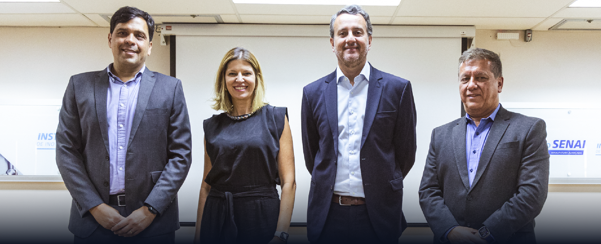
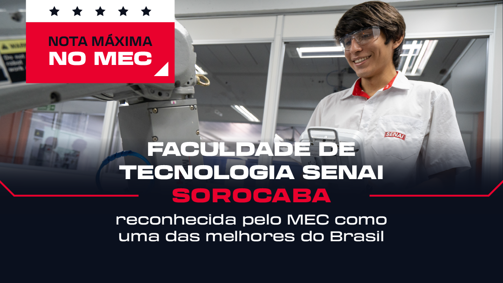

Birigüi - Vila Xavier
AVAK BEDOUIAN
Noticias
Gerdau e SENAI-SP formalizam parceria educacional baseada no conceito de economia circular
Na iniciativa, a Comercial Gerdau, distribuidora própria dos produtos Gerdau, fornece parte do aço utilizado nas aulas práticas do SENAI-SP e, posteriormente, a instituição coleta as sucatas metálicas ferrosas geradas nos processos educacionais. O insumo retorna como matéria-prima para um novo ciclo de produção de aço nas unidades industriais da Gerdau. A estimativa é ter um volume de 600 toneladas por ano de geração de sucata metálica ferrosa. A parceria tem o princípio de incentivar o cuidado com o ciclo de vida dos resíduos e gerar impactos em sustentabilidade.
A reciclagem desses produtos feitos em aço traz uma série de benefícios para o meio ambiente, incluindo a redução da emissão de gases de efeito estufa e a economia de insumos básicos como água e energia. Além disso, gera renda alternativa no segmento de coleta e reciclagem, contribuindo com o avanço da economia local. Esse movimento faz parte do dia a dia da Gerdau, que é a maior recicladora de sucata ferrosa da América Latina, e transforma, anualmente, mais de 11 milhões de toneladas de sucata em aço e 71% da produção de aço da empresa é resultado do processo de reciclagem de sucata.
Faculdade de Tecnologia SENAI Sorocaba é reconhecida pelo MEC como uma das melhores do Brasil
A Faculdade de Tecnologia SENAI “Gaspar Ricardo Junior”, de Sorocaba, conquistou a nota cinco (escala 1 a 5) na avaliação de Recredenciamento Institucional, realizada pelo Ministério da Educação (MEC). O reconhecimento considerou o planejamento e a avaliação institucional, o desenvolvimento institucional, as políticas acadêmicas e de gestão. Além disso, outros pontos que contribuíram para o resultado, foram: a qualidade técnica, o engajamento do corpo docente, e a infraestrutura do SENAI-SP.
Você sabia que temos trilhas de cursos?
Com a missão de aumentar a competitividade da indústria por meio da educação profissional, o SENAI-SP oferece diversas trilhas de Cursos Livres para formar profissionais em diferentes segmentos da indústria, como Administração e Gestão, Alimentos e Bebidas, Construção Civil, Design de Moda, Design Gráfico, Fabricação Mecânica, Logística, Mecânica Automotiva, Mecatrônica, Meio Ambiente, Metalurgia e Soldagem, Química, Refrigeração e Climatização, TI e muitos outros.
As trilhas são alinhadas às demandas de cada setor, planejadas para abranger uma variedade de disciplinas e competências exigidas pelas empresas industriais. Os cursos vão da iniciação profissional até a especialização e têm requisitos e carga horária variados.
Todos os meses indicamos, pelas nossas redes sociais e pelo site, uma nova trilha de cursos como possibilidade para você se especializar e ser o profissional que a indústria procura!